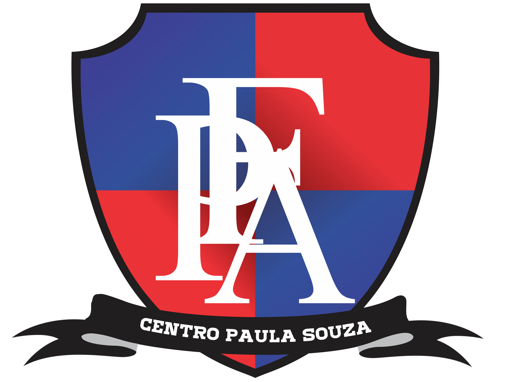

Olá, seja bem-vindo(a)
Temos diversas possibilidades para inovar o seu dia
Venha conhecer nosso ChatBot. Com o intuito de explicar o projeto Radar Wave introduzimos uma conversa com uma IA pre-programada para explicar a você como nosso projeto funciona. Além disso, nossa IA é muito interativa e dinâmica até certo ponto. Afinal, nossa IA ainda é limitada, mas nada que vai impedir sua experiência de aproveitar o projeto.
Além disso, temos um jogo feito por nós mesmos, alunos, onde mostramos como funciona a visão de um submarino em baixo do oceano e a importancia de um sonar. O jogo é muito divertido e dinâmico, esperamos que goste do nosso jogo.
Viemos aqui agradecer a você que chegou até aqui. Esperamos que tenha se divertido com nosso projeto. Pedimos que compartilhe com um colega se tiver achado interessante nosso projeto Radar Wave. Aproveite a Feira de Ciências ETEC 2024.
